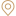
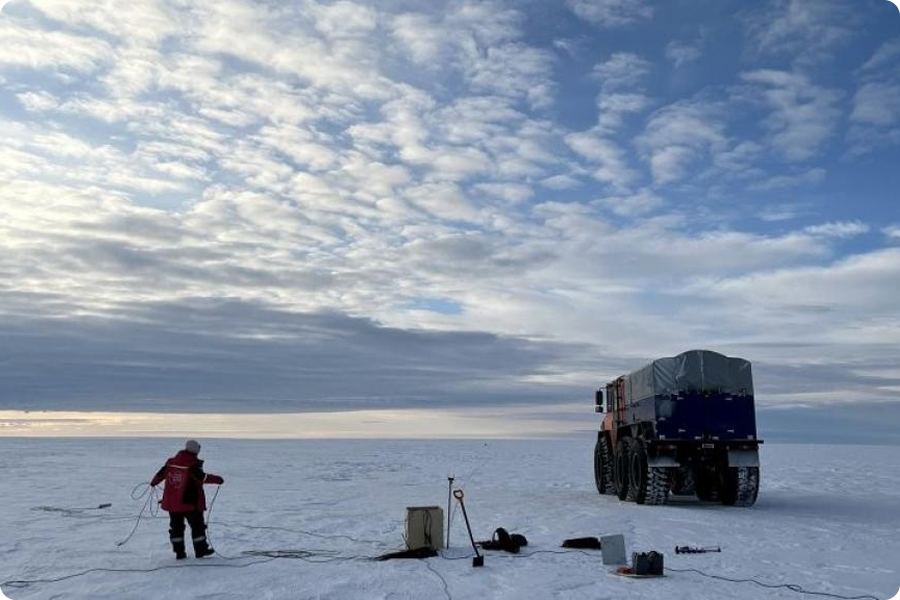

Инновационные направления в проектировании горнодобывающих предприятий: Безопасное и эффективное освоение месторождений полезных ископаемых
XIII Международный научно-практический форум
- 29 марта 2026
-

Санкт-Петербург

Важно!
Уважаемые участники Конференции!
Мы благодарим вас за активную работу и сообщаем, что сертификаты и дипломы на 13.02.26 находятся в печати. В течение следующей недели мы вышлем вам на электронные адреса сканы дипломов и сертификатов, а также отправим их по почте.
Также напоминаем, что статьи и материалы для публикации следует прислать до 28.02.2026 на почту land.spmi@yandex.ru.
Желаем вам успехов в научной деятельности!
О конференции
О конференции
Конкурс «Моя специальность» направлен на выявление и поддержку обучающихся Горного университета, способных самостоятельно решать исследовательские задачи и осмысленно связывать результаты своей работы с осваиваемой специальностью и будущей профессиональной деятельностью.
Конкурс проводится в два этапа: заочный отборочный и очный заключительный. Для участия студенты представляют индивидуальные конкурсные работы, являющиеся результатом самостоятельной исследовательской и (или) научно-инженерной деятельности.
Победителям и призёрам Конкурса предоставят возможность опубликовать свои работы в форме сборника научных трудов Конкурса, который будет размещён в Научной электронной библиотеке eLIBRARY.RU с индексацией в базе данных научного цитирования РИНЦ.
Задачи
- Формирование у обучающихся осознанного понимания связи исследовательской деятельности с осваиваемой специальностью, её профессиональной значимостью и задачами соответствующей отрасли;
- Выявление обучающихся, демонстрирующих способность самостоятельно формулировать научную проблему, выбирать и обосновывать методы её решения, интерпретировать полученные результаты, аргументировать выводы и критически оценивать собственный вклад;
- Выявление перспективных исследовательских работ, обладающих потенциалом дальнейшего развития в научно-образовательной среде университета;
- Вовлечение обучающихся в научно-исследовательскую, инженерную и проектную деятельность университета в рамках реализации пилотного проекта «совершенствование высшего инженерного образования»;
- Создание условий для взаимодействия участников с кафедрами, научными центрами, лабораториями, преподавателями, исследователями и организациями-партнёрами университета;
- Отбор перспективных обучающихся для участия в международных научных и образовательных программах и стажировках, подготовки публикаций и формирования дальнейшей научной траектории, включая поступление в аспирантуру.
Секционные заседания
Пленарное заседание «Перспективы и проблемы развития
минерально-сырьевого комплекса»
27 мая (МФК, Конгресс-холл)
Председатели:
Шабаров Аркадий Николаевич , директор научного центра геомеханики и проблем горного производства, Санкт- Петербургский горный университет императрицы Екатерины II
Рассказов Игорь Юрьевич , академик РАН, директор Хабаровский Федеральный исследовательский центр ДВО РАН
1. Геодинамическая безопасность и геомеханические проблемы
освоения месторождений полезных ископаемых
27 мая (МФК, Конгресс-холл)
Председатели:
Шабаров Аркадий Николаевич , директор научного центра геомеханики и проблем горного производства, Санкт- Петербургский горный университет императрицы Екатерины II
Рассказов Игорь Юрьевич , академик РАН, директор Хабаровский Федеральный исследовательский центр ДВО РАН
2,3. Разработка месторождений полезных ископаемых.
Современные технологии производства буровзрывных работ
27 мая (МФК, Конгресс-холл)
Председатели:
Шабаров Аркадий Николаевич , директор научного центра геомеханики и проблем горного производства, Санкт- Петербургский горный университет императрицы Екатерины II
Рассказов Игорь Юрьевич , академик РАН, директор Хабаровский Федеральный исследовательский центр ДВО РАН
4. Энергообеспечение, электромеханика и энергоэффективность
горного производства
27 мая (МФК, Конгресс-холл)
Председатели:
Шабаров Аркадий Николаевич , директор научного центра геомеханики и проблем горного производства, Санкт- Петербургский горный университет императрицы Екатерины II
Рассказов Игорь Юрьевич , академик РАН, директор Хабаровский Федеральный исследовательский центр ДВО РАН
5. Геомеханическое обеспечение и риски при разработке
месторождений полезных ископаемых открытым способом
27 мая (МФК, Конгресс-холл)
Председатели:
Шабаров Аркадий Николаевич , директор научного центра геомеханики и проблем горного производства, Санкт- Петербургский горный университет императрицы Екатерины II
Рассказов Игорь Юрьевич , академик РАН, директор Хабаровский Федеральный исследовательский центр ДВО РАН
6. Проблемы размещения горнопромышленных отходов
27 мая (МФК, Конгресс-холл)
Председатели:
Шабаров Аркадий Николаевич , директор научного центра геомеханики и проблем горного производства, Санкт- Петербургский горный университет императрицы Екатерины II
Рассказов Игорь Юрьевич , академик РАН, директор Хабаровский Федеральный исследовательский центр ДВО РАН
7. Маркшейдерское обеспечение безопасного освоения
месторождений полезных ископаемых и подземного пространства
27 мая (МФК, Конгресс-холл)
Председатели:
Шабаров Аркадий Николаевич , директор научного центра геомеханики и проблем горного производства, Санкт- Петербургский горный университет императрицы Екатерины II
Рассказов Игорь Юрьевич , академик РАН, директор Хабаровский Федеральный исследовательский центр ДВО РАН
8. Комплексная переработка природного и техногенного сырья
27 мая (МФК, Конгресс-холл)
Председатели:
Шабаров Аркадий Николаевич , директор научного центра геомеханики и проблем горного производства, Санкт- Петербургский горный университет императрицы Екатерины II
Рассказов Игорь Юрьевич , академик РАН, директор Хабаровский Федеральный исследовательский центр ДВО РАН
9. Экономика недропользования
27 мая (МФК, Конгресс-холл)
Председатели:
Шабаров Аркадий Николаевич , директор научного центра геомеханики и проблем горного производства, Санкт- Петербургский горный университет императрицы Екатерины II
Рассказов Игорь Юрьевич , академик РАН, директор Хабаровский Федеральный исследовательский центр ДВО РАН
10. Гидрогеологическое обеспечение освоения месторождений
полезных ископаемых
27 мая (МФК, Конгресс-холл)
Председатели:
Шабаров Аркадий Николаевич , директор научного центра геомеханики и проблем горного производства, Санкт- Петербургский горный университет императрицы Екатерины II
Рассказов Игорь Юрьевич , академик РАН, директор Хабаровский Федеральный исследовательский центр ДВО РАН
Важные даты
до 5 октября 2025 года
Регистрация участников
до 10 октября 2025 года
Подтверждение очного участия Оргкомитетом
10 октября 2025 года
Оформление приглашений и виз
28 октября 2025 года
Заезд и регистрация участников
29-31 октября 2025 года
Рабочие дни
01 ноября 2025 года
Отъезд участников
Условия и форма участия
Информационные партнёры
Организаторы
Контакты
Организационный комитет
Екатерина Вторая
Императрица и Самодержица Всероссийская